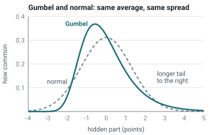
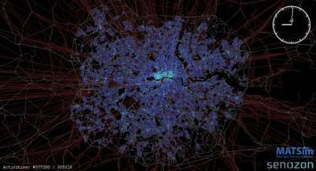

Part II · People and places · Module 4
Travel demand and mode choice
Almost every number in a transport decision, from the traffic on a new road to the riders on a new tram and the benefits in an appraisal, comes out of a travel demand model. This module opens that model up. It follows the data that feed it, the classic four-step sequence, the choice models at its heart, newer simulations of people's whole days, and the search for traffic equilibrium. The aim is not to make you a modeler. It is to let you read a forecast critically: to know what a model can tell you, what it cannot, and which assumptions to ask about.
- The question
- When a plan changes travel times, prices or where things are, how will people respond, and what is the change worth to them? Every traffic forecast, ridership forecast and benefit estimate rests on a demand model's answer.
- What matters
- Whether the model lets people respond in all the ways they really can: travel or not, where to, how, when and by which route. A model that holds the number and pattern of trips fixed cannot see induced traffic, mode shift or new destinations. It overstates the benefits of new road capacity and understates those of better alternatives.
- Numbers to question
- The forecast itself: traffic and ridership forecasts are often far off (Module 14). How strongly traffic responds to faster or cheaper travel, in the short and the long run. The value of time inside the model (Module 2). The constant that decides how attractive a brand-new option, such as a tram line, will be.
- Levers
- A model is a lens, not a lever. Its inputs are the levers: prices and fares, service frequency, the road and rail network, street design, and where homes and jobs are. A good model responds to all of them. Many respond mainly to the network.
- Ask your analysts
- Was demand allowed to change, or was the trip matrix fixed? Did congested travel times feed back into the choice of destination and mode? Which survey, from which year, was the model estimated on? How did its past forecasts compare with what happened? Were benefits computed from the logsum or from time savings on a fixed list of trips? Do the scenarios differ by more than the model's convergence noise?
- Explain to a council what a demand model can and cannot forecast, and what holding demand fixed does to a forecast.
- Describe how household travel surveys (MiD, ODiN, NHTS, Japanese person-trip surveys, French EMC²) feed models, and where they are blind.
- Explain the four-step model, where it came from, and why its feedback loop matters for induced traffic.
- Compute logit choice shares and the change in consumer surplus for a simple policy, and check the result against the rule of a half.
- Explain the independence of irrelevant alternatives, and why nested logit relaxes it.
- Contrast trip-based, tour-based, activity-based and agent-based (MATSim) models.
- State Wardrop's two principles, explain why the equilibrium differs from the optimum, and why that gap is the basis of a congestion charge rather than an extra cost in Term C.
- Check a model report against five questions, and say which parts of \(W\) the model can and cannot estimate.
1. What a demand model can and cannot tell you A
Picture a council meeting. A consultant shows a slide: the widened ring road will carry 60,000 vehicles a day in 2040 and save drivers two million hours a year. (The numbers are illustrative.) Every figure on that slide comes from a travel demand model. This is a computer model that predicts how many people travel, where, how and by which route, with and without a plan.
Every demand model answers one question: if the plan changes travel times, costs and the location of opportunities, how do people change what they do? People can respond in five ways:
- whether to make a trip at all;
- where to go: which shop, which job, which school;
- how to travel: on foot, by bike, by bus or train, by car;
- when to leave;
- which way to go.
In the longer run, people also decide whether to own a car, buy a season ticket, move house or change jobs. Modules 5 and 13 deal with those decisions.
What a model can tell you
- Compare plans on equal terms. A model applies the same assumptions to every option. Even when its absolute forecast is off, the difference between two plans is often more reliable.
- Say who gains and who loses. A model that represents individual people can report effects by income, age, district or car ownership.
- Separate the sources of benefit. It can show how much of a gain comes from faster existing trips, and how much from new trips, new destinations or a switch of mode.
- Value the change. The same choice model that predicts behavior also measures what the options are worth to people. That measure, the logsum, is Term A of the welfare function (Module 1).
What a model cannot tell you
- The future with certainty. A forecast depends on population, jobs, incomes and fuel prices decades ahead. In their history of urban travel forecasting, David Boyce and Huw Williams note that accuracy is poor and not improving over time (review by David Levinson). Rail ridership forecasts, in particular, have often been far too high (Module 14).
- Responses it does not contain. A model that holds the number of trips fixed cannot show induced traffic. A model with large zones cannot see short walks. A model without land use cannot see homes and jobs move.
- Behavior that is not in its data. Models learn from today's choices. They are on weak ground for things nobody has yet chosen: a brand-new mode, a car that drives itself, a lasting shift to working from home.
What fixed demand does to a forecast
The most consequential assumption is easy to miss. Many models treat the table of trips between places, the origin–destination matrix, as fixed. Only the routes respond to a plan. This is the classic engineering objective of Module 1: minimize total vehicle travel time for a given set of trips.
Under fixed demand, a widened road attracts no new trips. Its time savings therefore last for the whole appraisal period, often 40 years or more. In reality, faster travel draws extra trips, longer trips and trips switched from other modes, until much of the time saving is used up. The evidence for this is the subject of Module 5. The reverse holds too. A fixed-demand model gives little credit to a better bus or cycle route, because the people who would switch to it are not allowed to.
A demand model in which trip-making, destinations and modes can all respond avoids this bias. Its logsum then contains induced trips, mode shift and destination change automatically. This is the single most important link between this module and the welfare objective. Section 8 shows the size of the bias in numbers.
2. Data: household travel surveys
Nearly every demand model in the world is estimated on a household travel survey. A random sample of households records every trip (or every activity) of every member on an assigned day. A trip record holds origin, destination, purpose, start and end time, the modes used and the number of people traveling together. The household record holds income, car and bicycle ownership, and season tickets. The survey supplies three things: how many trips people make, the choices from which the model learns, and totals against which the model is checked.
| Country | Survey | Run by | Notes |
|---|---|---|---|
| Germany | Mobilität in Deutschland (MiD) 2002, 2008, 2017, 2023 | Federal transport ministry (BMV), fieldwork by infas | MiD 2023 surveyed over 218,000 households and about 421,000 people (fieldwork 2023–24). Cities add the TU Dresden Mobilität in Städten – SrV survey. |
| Netherlands | Onderweg in Nederland (ODiN), continuous | Statistics Netherlands (CBS) for Rijkswaterstaat | Series dates from 1978 under earlier names (OVG, MON, OViN). One-day online diary, persons aged 6 and over, sampled from the population register. |
| United States | National Household Travel Survey (NHTS) | FHWA | National totals and trip rates. Metropolitan planning organizations run their own regional surveys for model estimation. |
| Japan | Urban-area person-trip surveys (都市圏パーソントリップ調査); national survey (全国都市交通特性調査) | Metropolitan planning councils; MLIT | Tokyo surveys since 1968, roughly every 10 years. The 5th (2008) received returns from about 730,000 people. A trial for the 7th survey ran in autumn 2026. |
| France | Enquête ménages déplacements (EMD), now Enquête mobilité certifiée Cerema (EMC²) | Local authorities, method certified by Cerema | Standard method since the 1970s, so cities are comparable. Results are published as open data. |
| Singapore | Household Interview Travel Survey (HITS), now Household Travel Survey (HTS) | Land Transport Authority | Historically about every four years; LTA now describes an annual HTS. Used to track Land Transport Master Plan targets. |
How a survey is designed shapes the model, and through it the decision:
- Short walks get lost. Respondents under-report short walking trips and the walks within public-transport trips, so walking is systematically undercounted. MiD 2023 reports that walking's share of trips rose from 22% to 26% since 2017, partly a real change and partly better capture. A mode that is under-recorded is undervalued in Term A.
- One day hides variety. A one-day diary cannot see that someone cycles twice a week and drives three times. Multi-day and smartphone-based panels, such as the Dutch Mobility Panel, help.
- Trips versus activities. A questionnaire that asks about trips makes it hard to model whole days. Modern surveys record activities and chains of trips explicitly.
- Surveys age. A model estimated on a survey from before the pandemic, or before a new rail line opened, describes the city as it was. Ask which year the model learned from.
„Der Verkehr liegt im Befragungszeitraum 2023/2024 niedriger als zum Zeitpunkt der Vorgängerstudie im Jahr 2017. Aktuell werden von der Bevölkerung in Deutschland täglich bundesweit 249 Mio. Wege (-3 Prozent) und 2.983 Mio. Kilometer Wegstrecke (-7 Prozent) zurückgelegt."
"Travel in the 2023/2024 survey period is lower than at the time of the previous study in 2017. The population of Germany currently makes 249 million trips a day nationwide (−3 percent) and travels 2,983 million kilometers (−7 percent)."
The ministry attributes the decline mainly to less car travel. It reports that residents of the largest cities make 31% of trips on foot, 33% by car, 21% by public transport and 15% by bicycle. Source: BMV, Mobilität in Deutschland page. Translated by the course authors (machine-assisted).
パーソントリップ調査とは、人の移動に関する内容について、ある人の平日の1日の動きを把握する調査です。
"A person-trip survey is a survey that captures the movements of a person over one weekday."
全国ＰＴ調査は、「全国横断的」かつ「時系列的」に都市交通の特性（外出率、トリップ原単位、交通手段分担率等）を把握する調査です。
"The national PT survey captures the characteristics of urban transport (share of people going out, trip rates, modal split, etc.) both across the whole country and over time."
MLIT adds that the national survey is run about every five years with a small sample, so it gives comparable rates but cannot provide the origin–destination totals that the metropolitan surveys, which sample a few percent of the population, supply. Sources: Tokyo Metropolitan Region Transportation Planning Council; MLIT. Translated by the course authors (machine-assisted).
3. Zones, networks and the four-step model
The standard demand model was born to place highways. In the 1950s, J. Douglas Carroll Jr. led a transportation study in Detroit and then the Chicago Area Transportation Study (CATS). Their task was to forecast traffic, in order to locate and size the freeways that the coming Interstate Highway System would build. Carroll's teams developed the sequence of four steps that cities around the world still use. At the same time, also in Chicago, the economists Martin Beckmann, C. B. McGuire and Christopher Winsten worked out the mathematics of traffic equilibrium (section 6). The two groups did not work together. Their ideas met only decades later, when better algorithms put the equilibrium into everyday practice.
The origin matters for how the model is read today. It was built to answer "how much road do we need for the traffic we expect?". It was not built to ask whether the traffic should be expected at all.
Sources: D. Boyce and H. Williams, Forecasting Urban Travel: Past, Present and Future (Edward Elgar, 2015), as summarized in D. Levinson's review; M. Beckmann, C. B. McGuire and C. B. Winsten, Studies in the Economics of Transportation (Yale University Press, 1956).
Zoning
The model divides the study area into traffic analysis zones. Each zone is treated as if all its trips start and end at one point, which is connected to the road and transit networks. Zone size trades precision against data and computing time. Sweden's national Sampers model uses about 11,000 zones, while a city model may use 500 to 3,000.
Zones that are too large produce a hidden bias. Trips inside a zone never touch the modeled network. These are disproportionately walking and cycling trips. A coarse zoning therefore systematically under-represents active modes, and with them Terms A and B.
The four steps
- Trip generation. How many trips start and end in each zone, by purpose? The answer usually comes from household size, car ownership, jobs and floor space.
- Trip distribution. Where do the trips go? This step fills the origin–destination matrix, usually with a gravity model (below).
- Mode choice. How do people travel between each pair of zones? This step splits each cell of the matrix by mode, usually with a logit model (section 4).
- Assignment. Which routes do they take? This step loads the car trips onto the road network and the transit trips onto the transit network, and finds the congested travel times (section 6).
The steps are linked by a feedback loop. The congested times from step 4 must go back to steps 2 and 3, because congestion changes where people go and how they travel. The model then repeats the steps until times and flows agree. Many practical models skip or cut short this loop. That is one of the main reasons forecasts understate induced traffic: the model widens a road, sees it get faster, and never lets anyone react to the speed.
The gravity model
The gravity model fills in where trips go. Its idea is simple. The number of trips between two zones grows with the trips that start in one and the opportunities (jobs, shops) in the other, and it falls as the trip becomes longer or costlier. Like Newton's gravity, big and close things attract most. Walter Hansen's accessibility measure uses the same shape (Module 1).
The gravity model is not a separate tradition. It gives exactly the same predictions as a logit model of destination choice, in which each destination's attractiveness includes the number of opportunities it offers (Step 6 of the box in section 4). So it fits inside the same framework as Term A.
Two assumptions deserve a question. First, how fast the number of trips falls with distance is estimated from today's travel. The model assumes people will trade distance against time in the same way in the future. Second, the "cost" of reaching a destination is often the car travel time alone. Then a better bus service cannot make any destination more attractive, and its benefit is missed. The better choice is a cost that combines all modes, the mode-choice logsum.
Under the hoodThe doubly constrained gravity model and its balancing factors
Write \(P_i\) for the trips produced in zone \(i\), \(D_j\) for the trips attracted to zone \(j\), and \(c_{ij}\) for the generalized cost of traveling from \(i\) to \(j\). The doubly constrained gravity model sets the number of trips \(T_{ij}\) to
$$T_{ij} = a_i\,P_i\,b_j\,D_j\,f(c_{ij}),\qquad f(c_{ij}) = e^{-\beta c_{ij}}.$$The function \(f\) is the deterrence function. The parameter \(\beta\) sets how fast trips fall off with cost and is estimated from the survey. The balancing factors \(a_i\) and \(b_j\) make sure that each row of the matrix adds up to \(P_i\) and each column to \(D_j\):
$$a_i = \Big[\sum_j b_j D_j f(c_{ij})\Big]^{-1},\qquad b_j = \Big[\sum_i a_i P_i f(c_{ij})\Big]^{-1}.$$Each factor depends on the other, so they are found by turns: fix the \(b_j\), compute the \(a_i\), then recompute the \(b_j\), and repeat until nothing changes. This is called Furness iteration or iterative proportional fitting.
Alan Wilson showed in 1967 that this matrix is the most probable one given the row and column totals and a fixed total travel cost, a result from entropy maximization. It is also exactly the logit destination-choice model with measured utility \(-\beta c_{ij} + \ln D_j\). The \(\ln D_j\) term is the size term \(\ln O_j\) of Step 6 in section 4.
Ideally \(c_{ij}\) is the mode-choice logsum between \(i\) and \(j\), divided by the cost weight so that it is in money. Then an improvement to any mode makes destinations easier to reach, and the gravity model and the mode-choice model form one consistent nested model.
I Sampers beräknas restider mellan modellens cirka 11 000 prognosområden genom nätutläggning med så kallad användarjämvikt för vägtrafik och optimal strategi för kollektivtrafik.
"In Sampers, travel times between the model's approximately 11,000 forecast zones are computed by network assignment using so-called user equilibrium for road traffic and optimal strategy for public transport."
The same report states that Sampers 4 forecasts travel by car, air, train, bus, metro, tram, walking and cycling, with base year 2019 and forecast year 2045, and that the 2045 forecast is the reference case for Trafikverket's cost–benefit analyses. Source: Trafikverket, Prognos för persontrafiken 2045 (2024). Translated by the course authors (machine-assisted).
4. Discrete choice: multinomial logit A
Random utility, step by step
Module 1 showed with a simulation what the logit shares and the logsum mean. The box below derives both formulas in six steps, and shows how the weights are estimated from data. Readers who only need the results can skip it. It was developed for transport by Daniel McFadden in the 1970s, which earned him the Nobel Prize in 2000.
Under the hoodDeriving the logit shares and the logsum in six steps
Step 1: the analyst's view
An analyst wants to learn from data how people choose. The analyst has a travel survey. For each trip, it shows which option the person chose. It also shows the travel time and the cost of every option, including those not chosen.
The analyst sees only the measured parts and the choices. The hidden parts stay hidden. So the analyst makes the same assumptions as the demo in Module 1: each person picks the option with the highest utility, and the hidden parts are random.
Formally, write \(U_{nj}\) for the utility that person \(n\) gives option \(j\). We split it into a measured part \(V_{nj}\) and a hidden part \(\varepsilon_{nj}\):
$$U_{nj} \;=\; V_{nj} \;+\; \varepsilon_{nj}.$$The measured part is a weighted sum of the things we can measure:
$$V_{nj} = \beta_t\,t_{nj} + \beta_c\,c_{nj}.$$Here \(t_{nj}\) is the travel time and \(c_{nj}\) the money cost. The weights \(\beta_t\) and \(\beta_c\) say how much one minute and one euro lower the utility. Both are negative, because more time and more cost make an option less attractive. We do not know the weights in advance. Learning them from the survey is the analyst's task.
Other measurable qualities can be added in the same way, for example the number of transfers or how crowded a train is. We collect them in a list, a vector \(\mathbf{x}_{nj}\), and give each its own weight. The weights form a second vector, \(\boldsymbol{\beta}_x\). The term \(\boldsymbol{\beta}_x^{\top}\mathbf{x}_{nj}\) is short for "each quality times its weight, all added up". The full measured part is then
$$V_{nj} = \beta_t\,t_{nj} + \beta_c\,c_{nj} + \boldsymbol{\beta}_x^{\top}\mathbf{x}_{nj}.$$Step 2: from hidden parts to probabilities
Because part of the utility is hidden, the analyst cannot predict a choice with certainty. The analyst can only say how likely each choice is. Option \(j\) is chosen when its utility is the highest, so its probability is
$$P_{nj} = \Pr\big(U_{nj} \ge U_{nk}\ \text{for every other option } k\big).$$To compute this probability, we need an assumption about the hidden parts \(\varepsilon\): which values are likely and which are rare. Such an assumption is called a probability distribution.
The standard choice is the Gumbel distribution. It is named after Emil Gumbel, a German statistician who studied extremes, such as the highest flood of each year. It describes how the largest of many random values is spread. Its shape is a bell, close to the normal distribution, with a slightly longer tail toward high values. In formula form, the chance that a Gumbel value is at most \(x\) is \(\exp(-e^{-x})\). The demo in Module 1 draws its hidden parts from this distribution.

Why Gumbel and not the normal distribution? Mainly because of convenience. With Gumbel, the probabilities have a simple formula. With the normal distribution they do not, and must be computed numerically (that model is called probit).
We need one more assumption: the hidden parts of different options are independent. Knowing that someone has an unusually strong liking for the bus tells us nothing about their hidden liking for the car. Note that this is an assumption about the hidden parts, not about the measured ones. Times and costs of different options can be related in any way.
Under these two assumptions, McFadden showed that the probability of choosing option \(j\) is
$$P_{nj} \;=\; \frac{e^{V_{nj}}}{\sum_k e^{V_{nk}}}.$$Let us read this formula piece by piece:
- The numerator, \(e^{V_{nj}}\), is always positive. It grows quickly with the measured utility: raising \(V\) by 1 multiplies it by about 2.7.
- The denominator adds up the same quantity for all options. Dividing by it makes the probabilities of all options sum to 1.
- If all options have equal \(V\), each gets the same share. If one option's \(V\) is far above the others, its probability approaches 1.
Why does the exponential function appear? It is a consequence of the Gumbel assumption. The full derivation takes about a page (see Train, Discrete Choice Methods with Simulation, chapter 3, free online). Step 4 shows the key property of the Gumbel distribution that makes it work.
This model is called the multinomial logit model. "Multinomial" means that there can be more than two options. "Logit" is short for "logistic unit", a term coined by the statistician Joseph Berkson in 1944. With only two options, the formula becomes the logistic function, the S-shaped curve \(P_1 = 1/(1+e^{-(V_1-V_2)})\). It turns the difference in utility into a probability between 0 and 1.
Step 3: taking the logarithm
The probability formula is hard to read as it stands. The option's own utility sits inside an exponential, and it is divided by a sum over all options. We would like to pull these two parts apart, for two reasons.
- To see what drives a choice. We want to see how an option's own utility affects its probability, separately from the other options.
- To estimate the weights. A survey contains many choices. The probability of observing all of them together is the product of their individual probabilities. That is a product of many numbers between 0 and 1, which is unwieldy and quickly becomes too small for a computer to store accurately.
The logarithm solves both problems. It turns a division into a subtraction: \(\ln(a/b) = \ln a - \ln b\). It turns a product into a sum: \(\ln(ab) = \ln a + \ln b\). And it undoes the exponential: \(\ln e^{V} = V\). Because the logarithm only ever increases, it also keeps the order of things: a larger probability always has a larger logarithm.
So we take the natural logarithm of both sides of the probability formula. The result is
$$\ln P_{nj} \;=\; V_{nj} \;-\; \ln \sum_k e^{V_{nk}}.$$The second term is the same for every option of person \(n\). It does not depend on which option \(j\) we look at. So, for one person, the option with the highest measured utility \(V\) is also the option with the highest probability.
The first term, \(V_{nj}\), is linear in the weights \(\beta\). This is why the model is also called a log-linear model: the logarithm of the probability is linear in the unknown weights.
The analyst can now estimate the weights. The method is called maximum likelihood. It picks the weights that make the choices actually observed in the survey as probable as possible. Thanks to the logarithm, this means maximizing a sum rather than a product: the sum of \(\ln P\) over all observed choices. Because the logarithm keeps the order, the weights that maximize the sum also maximize the product. Here, unlike in the comparison above, the second term does not drop out, because it changes when the weights change. Statistical software does this calculation.
The second term has its own name. It is called the logsum, because it is the logarithm of a sum:
$$\text{logsum}_n \;=\; \ln \sum_k e^{V_{nk}}.$$It turns out to be exactly the quantity we need for welfare, as the next step shows.
Step 4: the value of the best choice is the logsum
The person ends up with the utility of the option they choose. Since they choose the best one, they get the highest utility, \(\max_j U_{nj}\). The analyst does not know this value, because it includes the hidden parts.
The analyst can, however, compute its average over all possible hidden values. This average is called the expected value, written \(\mathbb{E}[\cdot]\). With Gumbel-distributed hidden parts, it equals the logsum plus a constant:
$$\mathbb{E}\Big[\max_j\,(V_{nj}+\varepsilon_{nj})\Big] \;=\; \ln\sum_j e^{V_{nj}} \;+\; \gamma .$$The constant \(\gamma \approx 0.577\) is called Euler's constant. It is the average of a single Gumbel value. If the hidden parts are shifted so that they average zero, as in the Module 1 demo, the constant disappears. Either way it is the same in every situation, so it cancels whenever we compare two situations. From now on we drop it.
Why is this true? The key is a property of the Gumbel distribution: the largest of several independent Gumbel values is again Gumbel-distributed. The box shows this in three lines.
Start with one option. Its utility \(U_j = V_j + \varepsilon_j\) is a Gumbel value shifted by \(V_j\). So the chance that it is at most \(x\) is \(\exp(-e^{-(x-V_j)})\).
The largest utility is at most \(x\) only if every single utility is at most \(x\). Because the hidden parts are independent, we can multiply the individual chances:
$$\Pr\Big(\max_j U_j \le x\Big) = \prod_j \exp\!\big(-e^{-(x-V_j)}\big) = \exp\!\Big(-e^{-x}\sum_j e^{V_j}\Big) = \exp\!\Big(-e^{-(x - \ln\sum_j e^{V_j})}\Big).$$The last expression is again a Gumbel distribution, now shifted by \(\ln\sum_j e^{V_j}\). The average of a Gumbel value shifted by \(m\) is \(m+\gamma\). ∎
Two special cases help to build intuition:
- One option clearly dominates. If \(V_1\) is far above \(V_2\), the logsum is close to \(V_1\). A second, poor option adds almost nothing.
- Several equally good options. If \(k\) options all have the same \(V = v\), the logsum is \(v + \ln k\). The extra \(\ln k\) is the value of choice: with more good options, it becomes more likely that one of them happens to suit you particularly well today.
One more property will be useful later. If an option's measured utility \(V_j\) rises by a small amount, the logsum rises by that amount times the option's probability \(P_j\). An improvement is worth more, the more people use the improved option.
Step 5: from utility to money
Utility has no natural unit. To add it to costs and harms, we convert it into money. The cost weight \(\beta_c\) makes this possible: it says how much utility one euro of cost takes away.
We call the amount of utility one euro is worth \(\lambda_n = -\beta_c\). (The minus sign makes \(\lambda_n\) positive, since \(\beta_c\) is negative.) Economists call \(\lambda_n\) the marginal utility of money.
In the Module 1 demo we chose one point of utility to be worth €10, so there \(\lambda = 0.1\) per euro. Dividing the logsum by \(\lambda_n\) turns it into euros. The result is the person's consumer surplus: the money value of the choices available to them.
$$A_n = \frac{1}{\lambda_n}\ln \sum_{j} e^{V_{nj}}.$$Only differences between situations are meaningful. When a plan changes the measured utilities, the change in welfare is the change in the logsum, divided by \(\lambda_n\). Williams (1977) and Ben-Akiva and Lerman (1985) established this as the welfare measure of a choice model.
The traditional appraisal shortcut is the rule of a half. It multiplies the improvement by the average of the number of users before and after (Module 2). It is a straight-line approximation of the change in the logsum.
Step 6: why destinations get a term \(\ln O_j\)
So far the options were ways of traveling. The same model works when the options are destinations, such as the districts of a city.
A district is not a single opportunity. A district with 5,000 jobs offers 5,000 possible workplaces. Let \(O_j\) be the number of opportunities in district \(j\).
Suppose, for simplicity, that all opportunities in a district have the same measured utility \(v_j\). They have the same travel time and cost from home. Each has its own hidden part, independent of the others. Then choosing the district means choosing the best of its \(O_j\) opportunities. By Step 4, the value of that choice is a logsum over \(O_j\) equal terms:
$$\ln \sum_{i=1}^{O_j} e^{v_j} \;=\; \ln\!\big(O_j\, e^{v_j}\big) \;=\; v_j + \ln O_j .$$So the term \(\ln O_j\) is not an arbitrary choice. It is exactly what bundling identical opportunities into one district produces. It is called the size term. Three consequences follow:
- The probability of choosing a district is proportional to \(O_j\,e^{v_j}\): the number of opportunities times a factor that falls with travel time and cost. This is the gravity model of travel demand. The logsum over districts is the utility-based version of Hansen's accessibility (Module 1).
- Doubling the jobs in a district doubles its chance of being chosen, all else equal. Splitting a district into two halves leaves the predictions unchanged. That is reassuring, because district boundaries are drawn by the analyst, not by the travelers.
- In practice, the weight on \(\ln O_j\) is estimated from data rather than fixed at 1. A weight below 1 means the opportunities in a district are partly alike, so their hidden parts are not independent. A variant called nested logit handles this (below).
A complete option is then a destination \(j\) reached by a way of traveling \(m\), with measured utility \(V_{n,jm} = \beta_t\,t_{n,jm} + \beta_c\,c_{n,jm} + \boldsymbol{\beta}_x^{\top}\mathbf{x}_{n,jm} + \ln O_j\).
A worked example
A commuter travels 6 km to work and can drive, take the bus or cycle. Each option's measured utility falls with its travel time in minutes and its cost in euros. Each mode also gets a constant, the alternative-specific constant (ASC). It captures everything about a mode that time and cost do not: comfort, reliability, the effort of cycling, habit. Here the car's constant is set to zero, and the others are measured relative to it:
$$V_j = \text{ASC}_j - 0.05\,t_j - 0.25\,c_j.$$One minute costs 0.05 points of utility and one euro costs 0.25 points. So one minute is worth \(0.05/0.25 = 0.2\) euros, or 12 euros an hour. That is the value of time inside this model.
| Mode | ASC | \(t\) (min) | \(c\) (€) | \(V\) | \(e^V\) | \(P\) |
|---|---|---|---|---|---|---|
| Car | 0 | 20 | 4.00 | −2.00 | 0.135 | 41.9% |
| Bus | −0.5 | 30 | 2.00 | −2.50 | 0.082 | 25.4% |
| Bicycle | −1.0 | 25 | 0 | −2.25 | 0.105 | 32.6% |
The logsum is \(\ln(0.135+0.082+0.105) = \ln 0.3228 = -1.131\).
Policy: a bus lane cuts the bus time from 30 to 22 minutes, so \(V_{\text{bus}} = -2.10\). The new shares are car 37.3%, bus 33.7% and bicycle 29.0%, and the new logsum is \(-1.013\). To turn the change in logsum into euros, divide by the utility of one euro, \(\lambda = 0.25\). The change in consumer surplus per trip is
$$\Delta CS = \frac{1}{\lambda}\,\Delta\text{logsum} = \frac{-1.013-(-1.131)}{0.25} = 0.47\ \text{€}.$$Check with the rule of a half (Module 2). The saving for a bus user is 8 min × 0.2 €/min = 1.60 €. The average bus share before and after is \((25.4\%+33.7\%)/2 = 29.6\%\), and \(0.296 \times 1.60 = 0.47\) €. The two methods agree, as they should for a change in one attribute. The logsum is more general: it remains correct when the change also alters destinations, adds a new mode or removes one.
What other objectives would have counted. A fixed-demand model that counts person-time records a saving of 8 minutes for the 25.4% who already took the bus, and nothing for the 8.3% of travelers who switched. A model that counts only vehicles on the road network sees almost nothing for bus users. It records a small gain for cars if the bus lane was added without taking a car lane, and a loss if it was. The same bus lane can therefore look good, neutral or harmful, depending on which model scores it.
Elasticities: how strongly people respond
An elasticity is the percentage change in one quantity when another changes by one percent. In the example, the elasticity of the bus share with respect to bus time is −1.12. A 10% longer bus trip would lose about 11% of the bus riders. Elasticities are the common language for comparing models with real-world evidence.
Two rules hold almost everywhere. First, long-run responses exceed short-run ones, often by a factor of two or more. In the short run people change routes and times. In the long run they change cars, homes and jobs. Second, public-transport fare elasticities are typically well below 1 in absolute value in the short run, and roughly double in the long run.
The elasticity that matters most for road decisions is how much traffic grows when roads get faster. The evidence on it, and the arguments over it, are in Module 5. When a model's response is far weaker than that evidence, ask why.
Under the hoodElasticity formulas for multinomial logit
For a multinomial logit model in which attribute \(x\) enters linearly with weight \(\beta_x\), the direct elasticity of option \(j\)'s probability with respect to its own attribute \(x_j\), and the cross elasticity of another option \(i\)'s probability, are
$$E^{P_j}_{x_j} = \beta_x\,x_j\,(1-P_j),\qquad E^{P_i}_{x_j} = -\beta_x\,x_j\,P_j\quad (i\ne j).$$In the example: \(-0.05 \times 30 \times (1-0.254) = -1.12\) for the bus share with respect to bus time. The cross elasticity of both the car and the bicycle share with respect to bus time is \(+0.05 \times 30 \times 0.254 = +0.38\).
The cross elasticity is the same for car and bicycle. Logit cannot express that a slower bus pushes people more toward one alternative than the other. This is a direct consequence of the IIA property below.
These are point elasticities, valid for small changes. For a large change, such as the 8-minute bus improvement, recompute the shares directly, as in the worked example.
Similar options: IIA and nested logit
Plain logit has a property called independence of irrelevant alternatives (IIA). The ratio between the shares of any two options does not depend on any other option. The textbook illustration is the "red bus, blue bus" problem. Suppose a city has a car and a red bus, and adds a blue bus identical to the red one. In reality the blue bus would mainly split the bus riders. Logit instead takes riders from the car and the red bus in proportion to their shares.
This matters for decisions. A new tram line in a plain logit model draws riders from cars as readily as from buses. The model may then overstate how much car traffic the tram removes.
Nested logit is the standard repair. It groups similar options in a "nest", for example bus, tram and rail together under "public transport". People first choose between car, bike and public transport, then between the options inside the nest. A new option then draws mainly from its own nest. Mixed logit goes further and lets tastes vary between people, at the cost of heavier computation.
Under the hoodNested logit probabilities and the welfare measure
Group the alternatives into nests \(k\). Each nest has a scale (dissimilarity) parameter \(0<\mu_k\le 1\). The probability of alternative \(j\) in nest \(k\) is the probability of the nest times the probability of \(j\) within the nest:
$$P_{j} = \underbrace{\frac{e^{V_j/\mu_k}}{\sum_{l\in k} e^{V_l/\mu_k}}}_{P(j\mid k)}\;\cdot\;\underbrace{\frac{e^{\mu_k I_k}}{\sum_{m} e^{\mu_m I_m}}}_{P(k)},\qquad I_k = \ln \sum_{l\in k} e^{V_l/\mu_k}.$$\(I_k\) is the logsum inside nest \(k\), sometimes called its inclusive value. The welfare measure is the top-level logsum \(\ln\sum_m e^{\mu_m I_m}\), divided by \(\lambda\) as in Step 5 of the box above. With every \(\mu_k = 1\) the model collapses to plain logit. Values of \(\mu_k\) outside \((0,1]\) are inconsistent with utility maximization, and a model that estimates them should not be used for appraisal.
Typical structures put public-transport sub-modes in one nest, or place mode choice below destination choice. Mixed logit relaxes IIA more generally and allows random variation in tastes, at the cost of simulation (Train, Discrete Choice Methods with Simulation, chapter 6).
Adding an alternative with measured utility \(V_{\text{new}}\) raises the logsum by \(\ln\big(1 + e^{V_{\text{new}}}/\sum_{k} e^{V_k}\big) > 0\), however unattractive the alternative. This is the formal reason a new cycle route or bus line has value even to people who rarely use it, and why the course rejects mode-share targets as objectives (Module 1, Module 6). It is also a reason for care. The gain depends on the new option's constant (ASC), which is the least well identified parameter in most models. Ask to see the gain from a new option reported separately.
5. Beyond trips: tours, activities and agents
Trip-based four-step models have well-known weaknesses. They treat trips by the same person as independent, so a commuter can "choose" the car for the outward trip and the bicycle for the return. They have little sense of time of day, so people who shift their departure to avoid a peak charge are invisible. And they have no persons, only zones, so outcomes cannot be broken down by income, age or car access. That breakdown is what the equity weights of Term A need (Module 1).
Three newer families of models answer these weaknesses:
| Model class | Unit of choice | Examples | What it adds for \(W\) |
|---|---|---|---|
| Trip-based four-step | trip, aggregated by zone pair | Most city models; French four-step models (modèles à 4 étapes) | Fast and transparent; logsums by population segment |
| Tour-based | a round trip from home, with one main mode and destination | Dutch LMS/NRM, Swedish Sampers, many UK models | Consistent mode across a round trip; better long-run responses |
| Activity-based | a person's daily pattern of activities, then tours, then trips | DaySim, CT-RAMP, ActivitySim (open source, US agencies) | Person-level logsums for equity analysis; time of day; household interactions |
| Agent-based simulation | a full-day plan for each synthetic person, played out in a traffic simulation | MATSim (TU Berlin, ETH Zurich) | Queues that build and dissolve over the day; person-level scores; detailed equity analysis |
Activity-based models start from a synthetic population: a list of made-up individual persons and households that matches the census for each area. Each person's day is then simulated with a cascade of choice models: whether to work, how many stops, where, by which mode. Because each level's logsum enters the level above, the top-level logsum is a person's expected value of the whole day. That is a natural, person-level Term A.
MATSim, developed by Kai Nagel's group at TU Berlin and Kay Axhausen's at ETH Zurich, takes a different route. Each agent has a few daily plans. Each plan is played out in a traffic simulation and given a score: positive for time spent at activities, negative for time and money spent traveling. Agents then try new routes, departure times or modes, keep the plans that score well, and repeat. After many rounds, no agent can improve much by changing plan.

Where they fail. Richer models need richer data, take longer to run and are harder for an outsider to check. A council gains nothing from an activity-based model whose extra detail is not used in the appraisal, or whose results nobody outside the consultancy can reproduce. The test is whether the added detail answers a question the decision needs, such as who gains, or how people respond to a peak-hour charge.
Under the hoodMATSim scores and the logsum
MATSim's replanning is a co-evolutionary search: agents' plans evolve together, each in response to the congestion the others create. It converges toward a stochastic user equilibrium, in which no agent can improve its expected score by changing plans. The open-access MATSim book (Horni, Nagel and Axhausen, 2016) has a chapter relating the score to cost–benefit analysis. The change in an agent's executed-plan score, converted to money with the agent's cost weight, is a consumer-surplus measure. It is close to the logsum but not identical: it counts the utility of the plan actually chosen, rather than the expected maximum over all possible plans. Because of the random elements in the simulation, two runs of the same scenario differ slightly. Average over several runs before comparing scenarios.
Voor het maken van prognoses over mobiliteitsontwikkelingen op de langere termijn (15 à 30 jaar vooruit) beheert en ontwikkelt Rijkswaterstaat twee strategische modellen: het Landelijk Model Systeem (LMS) en het Nederlands Regionaal Model (NRM).
"To forecast mobility developments over the longer term (15 to 30 years ahead), Rijkswaterstaat manages and develops two strategic models: the National Model System (LMS) and the Netherlands Regional Model (NRM)."
The page adds that both models cover car, public transport, cycling and walking. The LMS covers the whole country, while four regional NRMs give detail down to motorway sections between junctions. They are built on ODiN data and run on the national WLO scenarios. The LMS dates from the 1980s, was originally built by Hague Consulting Group as a tour-based discrete-choice system, and has been audited independently. Source: Rijkswaterstaat. Translated by the course authors (machine-assisted).
6. Assignment and network equilibrium
The last step of the four, assignment, decides which route each trip takes. It then works out how slow each road becomes with the resulting traffic. Its answer determines the travel times that the whole model, and Term A, depend on.
Wardrop's two principles
- User equilibrium. Each driver takes the route that is quickest for them. Traffic settles where no one can save time by switching route alone. All used routes between two places then take the same time. This describes what drivers actually do.
- System optimum. Traffic is spread so that the total time spent by everyone is as small as possible. A planner who could assign routes would choose this.
The two differ because each driver ignores the delay they cause to everyone else on their route. That ignored delay is the external congestion cost. It is not an extra loss to add to Term C. Term A is computed from everyone's equilibrium travel times, so the delay drivers impose on each other is already in it (Module 1, "Where is congestion?"). The external congestion cost has a different job. It is the basis of the congestion charge: a charge equal to it on every road turns the user equilibrium into the system optimum (Module 13).
How a road slows down
To find the equilibrium, the model needs a rule for how travel time on each road rises with its traffic. This rule is called a volume–delay function. The most common one comes from the US Bureau of Public Roads (BPR) in 1964. It is smooth and easy to compute. But it allows more traffic than a road can physically carry, with travel time simply rising. Real queues form at junctions and bottlenecks and spill back onto other roads (Module 7, Module 9). German practice often uses functions fitted to the national capacity manual (HBS), and many models compute delay at junctions directly.
When adding a road makes everyone slower
Because drivers choose for themselves, the equilibrium can behave strangely. Dietrich Braess showed in 1968 that adding a road to a congested network can make every driver slower. His example, with 4,000 drivers whose trips grow from 65 to 80 minutes after a shortcut opens, is drawn in Module 1. The welfare lesson is general. At equilibrium, what is best for each driver and what is best for all differ. New capacity can therefore be worth less than its engineering time savings suggest, and occasionally less than nothing. Roads that were closed without the predicted gridlock are discussed in Module 5.
Is the model converged?
The equilibrium is found step by step. The model assigns traffic, recomputes travel times, shifts some traffic to faster routes, and repeats. It never reaches the exact equilibrium. It stops when a measure of the remaining error, the relative gap, is small enough. This matters for decisions. Two scenarios that differ by less than this leftover error cannot be ranked. A scheme that "saves" 0.1% of travel time in a model stopped at a gap of 1% has shown nothing. Ask for the gap, and ask that every scenario be run to the same, tight tolerance.
Under the hoodThe BPR function, the Beckmann program and the Frank–Wolfe algorithm
The BPR function. For link \(a\) with free-flow time \(t_a^0\), flow \(v_a\) and capacity \(c_a\):
$$t_a(v_a) = t_a^0\Big[1 + \alpha\Big(\frac{v_a}{c_a}\Big)^{\beta}\Big],\qquad \alpha = 0.15,\ \beta = 4 \text{ (defaults)}.$$The two principles in symbols. At the system optimum, total travel time \(\sum_a v_a t_a(v_a)\) is minimized. On a used route, each traveler then faces the marginal cost \(t_a + v_a t_a'(v_a)\). The term \(v_a t_a'(v_a)\) is the external congestion cost: the extra delay one more vehicle causes to the \(v_a\) vehicles already on the link. A toll equal to it on every link turns the user equilibrium into the system optimum.
The Beckmann program. Beckmann, McGuire and Winsten (1956) showed that the user equilibrium solves the convex program
$$\min_{v}\;\sum_a \int_0^{v_a} t_a(x)\,dx \quad \text{subject to flow conservation}.$$The integral is not total travel time. It is a construction whose minimum happens to satisfy Wardrop's first principle. Because the problem is convex, the equilibrium link flows are unique, and simple algorithms find them.
Frank–Wolfe in four lines.
- Start with an all-or-nothing assignment on free-flow times: every trip takes its shortest route. Call the flows \(v^{(0)}\).
- Update the link times \(t_a(v_a^{(k)})\). Do an all-or-nothing assignment on these times to get auxiliary flows \(y^{(k)}\).
- Find the step \(\alpha\in[0,1]\) that minimizes the Beckmann objective along \(v^{(k)} + \alpha(y^{(k)} - v^{(k)})\). Set \(v^{(k+1)}\) accordingly.
- Stop when the relative gap \(\big[\sum_a t_a v_a - \sum_a t_a y_a\big] / \sum_a t_a v_a\) is small. For scheme appraisal, practice asks for less than \(10^{-4}\).
Frank–Wolfe converges slowly near the solution. Modern software uses path-based or bush-based algorithms that reach much tighter gaps in the same time.
Dynamic traffic assignment. Static assignment has no queues that build and spill back, and no choice of departure time. Dynamic traffic assignment (DTA) moves traffic through time with a traffic-flow model (cell transmission, link transmission or simulation) and seeks a dynamic user equilibrium in route and, ideally, departure time. MATSim is one form of simulation-based DTA. DTA is needed for time-of-day pricing, signal coordination and incident management. It is harder to calibrate and to converge than static assignment. Module 10 covers how to verify it.
Son activité autour de la modélisation multimodale des déplacements et la simulation des trafics vise à prévoir la demande de transport et à dimensionner les infrastructures de transports, tout en facilitant l'évaluation des politiques d'aménagements et des services de mobilités.
"Its work on multimodal travel modeling and traffic simulation aims to forecast transport demand and to size transport infrastructure, while making it easier to evaluate land-use policies and mobility services."
Cerema's pages also describe the Enquêtes Mobilité Certifiées Cerema (EMC²) as the standard method for household mobility surveys in French urban areas, and include a methods page on the four-step model (modélisation en 4 étapes). Source: Cerema, Connaissance, modélisation et évaluation de la mobilité. Translated by the course authors (machine-assisted).
7. National practice compared
Countries share the same toolbox but use it differently. The differences lie less in the mathematics than in what the model is required to do: which survey it rests on, whether demand may respond, and whether its logsums reach the appraisal.
| Country | Practice | Strength / weakness for \(W\) |
|---|---|---|
| Germany | Cities produce a Verkehrsentwicklungsplan (VEP) or, increasingly, a mobility plan, supported by a multimodal macroscopic model, most often built in PTV Visum. Munich's 2006 VEP is being replaced by its Mobilitätsstrategie 2035. The EVA model (Lohse, TU Dresden) combines generation, distribution and mode choice. Federal projects use the national forecast prepared for the BVWP. | Strong network detail and data (MiD, SrV). Practice often stops at volumes and volume-to-capacity ratios rather than logsums. |
| Netherlands | LMS/NRM tour-based models are the mandatory basis for national projects. Their logsums and time savings feed the MKBA (social cost–benefit analysis). | Long time series and independent audits. Criticized in the past for weak cycling representation and limited land-use feedback. |
| Japan | Metropolitan person-trip surveys every ~10 years drive urban transport master plans. Rail demand models are well developed because rail dominates commuting. | Very large samples. Road appraisal counts only time, operating cost and crashes (Module 14). |
| Singapore | HITS/HTS data and LTA models track Land Transport Master Plan targets, including the share of peak trips by walk–cycle–ride. | Integrated with land-use planning; models are not public. |
| Sweden | Sampers (national, tour-based) and Samkalk (appraisal) produce consistent forecasts for all national plans. | Consistent national appraisal; regional models validated against counts. |
| France | Urban four-step models built on EMD/EMC² data; Cerema supports local authorities and audits models, e.g. for Lyon and Toulouse. | Comparable surveys across cities. Quality varies between local models. |
| United States | MPO models are required for regional plans. Larger MPOs have moved to activity-based models (DaySim, CT-RAMP, ActivitySim). | Open-source activity-based tools are a US strength. Many models were historically used to justify highway expansion with weak feedback. |
8. From model to Term A, and what goes wrong
Putting the pieces together: Term A is the value of everyone's options, measured by each person's logsum and converted to money (Module 1). For a plan \(\theta\), with people \(n\) in groups \(g\) weighted by \(\omega_g\),
$$A(\theta) = \sum_g \omega_g \sum_{n\in g}\frac{1}{\lambda_n}\,\ln\sum_{j\in C_n} e^{V_{nj}(\theta)}.$$Here \(C_n\) is the set of options open to person \(n\): destinations, modes and times of day. The measured utilities \(V_{nj}(\theta)\) must come from the converged model, with the congested travel times that the plan produces. Five questions decide whether the result can be trusted:
- Consistency. Were the travel times used in destination and mode choice the same as those that came out of assignment? If not, the logsum ignores the congestion the plan creates, and road schemes are overvalued.
- Variable demand. Was total demand allowed to respond? If the origin–destination matrix is fixed, there is no induced demand, and the logsum shrinks to time savings on existing trips. UK appraisal guidance (TAG) expects variable-demand modeling for road schemes, unless it can be shown to be unnecessary, for exactly this reason.
- The same value of money in every scenario. Logsum differences can be turned into euros only if the utility of a euro, \(\lambda_n\), does not change with the plan. Models usually assume this.
- The same choice set. If a scenario adds an option, its gain depends on the option's constant (ASC). Report that part separately.
- Convergence. Report the relative gap, and run each scenario to the same tolerance.
Suppose a widening cuts peak time on a corridor by 6 minutes for 10,000 existing car trips, valued at 12 €/h. Under fixed demand, that is worth €12,000 per peak period.
Now let demand respond. Extra trips arrive, and the time saving falls to, say, 3 minutes for 11,000 trips. The rule of a half then gives \(3/60 \times 12 \times (10{,}000+11{,}000)/2 = €6{,}300\). The fixed-demand estimate is almost twice as large.
The extra 1,000 trips also bring extra crashes, emissions and noise, which belong in Term C. The fixed-demand estimate leaves them out entirely. The extra delay those trips cause to other drivers is not a further cost: it is already in the smaller 3-minute saving, so it must not be counted again (Module 1). The numbers here are illustrative; the direction of the bias is not.
Use the commuter example in section 4.
- The city adds a €2 parking charge, so car cost rises to €6. Recompute the shares and the change in consumer surplus per trip. Who loses, and by how much?
- The charge is a transfer. Compute the revenue per trip (the new car share times €2). Where does it appear in \(W\)? (Hint: Term E, the revenue \(R\).) Compare it with the loss of consumer surplus. Why is the loss larger? In this example travel times do not change when people switch. What would have to be true of the road, or of Term C, for the charge to raise \(W\)? What role does the marginal cost of public funds play (Module 14)?
- Instead, a protected cycle route cuts bike time to 20 minutes, and its ASC rises from −1.0 to −0.6 because riding feels safer. Compute \(\Delta CS\). How much of it comes from the ASC change? How would you defend that part in an appraisal?
- (Under the hood) Compute the direct elasticity of the bike share with respect to bike time before and after the cycle route. Explain why it changes.
Pigou's network: 1 unit of demand, two routes. Route 1 always takes time 1. Route 2 takes time \(x\), where \(x\) is the share of traffic on it.
- Find the user equilibrium and the total travel time.
- Find the system optimum and the total travel time. (Answer: half on each route, total 0.75.)
- What toll on route 2 achieves the system optimum? Is anyone better off after paying it, before the revenue is returned? Show where the time savings and the toll appear in \(W\) (Terms A and E). Explain why the external delay must not also be subtracted in Term C.
- (Under the hood) Run two Frank–Wolfe iterations by hand, starting with all traffic on route 2.
Find the model report for a recent road or rail scheme in your country (Dutch MKBA reports, German BVWP project dossiers and UK TAG reports are public). Record: the survey used and its year, the number of zones, the model type (trip, tour, activity or agent), whether demand was variable, the convergence gap, and whether consumer surplus was computed by logsum or by the rule of a half. Which of the five questions in section 8 does it answer? Write the three questions you would put to its authors at a public hearing.
Readings and resources
- MIT OCW 1.201J — Transportation Systems Analysis: Demand and Economics (lecture notes) Free lecture slides on demand, discrete choice, network equilibrium and forecasting. The best single free companion to this module.
- Kenneth Train — Discrete Choice Methods with Simulation, 2nd ed. (Cambridge University Press, 2009), free online edition Chapters 2–4 (logit, GEV/nested logit) and 6 (mixed logit) at graduate level. Chapter 3 derives the logsum as consumer surplus.
- David Boyce & Huw Williams — Forecasting Urban Travel: Past, Present and Future (Edward Elgar, 2015) · review by David Levinson The history of urban travel forecasting, from Detroit and Chicago in the 1950s to activity-based models, with a frank view of forecast accuracy.
- TU Delft OCW — Transportation and Spatial Modelling Free course with lectures and exercises on demand modeling, including a demand-modeling exercise module.
- NPTEL (IIT Bombay) — Transportation Engineering I Video and text lectures that walk through the four steps sequentially with numerical examples.
- IIT Bombay — Transportation Systems Engineering lecture notes Written chapters on trip generation, gravity models, logit and assignment with worked examples.
- Yosef Sheffi — Urban Transportation Networks (1985), full text from the author's MIT page The classic text on equilibrium assignment, Frank–Wolfe and stochastic user equilibrium. Free with the author's permission.
- J. G. Wardrop (1952) — "Some theoretical aspects of road traffic research", Proceedings of the Institution of Civil Engineers, Part II, 1(3) The source of the two principles of traffic assignment.
- Horni, Nagel & Axhausen (eds.) — The Multi-Agent Transport Simulation MATSim (Ubiquity Press, 2016), open access The MATSim reference, including the chapter on scores and cost–benefit analysis and many city case studies.
- MATSim · MATSim open Berlin scenario · TU Berlin, Transport Systems Planning and Transport Telematics (VSP) Open-source agent-based simulation and a fully open city scenario to experiment with.
- ActivitySim · DaySim Open-source activity-based model systems used by US metropolitan planning agencies.
- Biogeme (EPFL) Free software for estimating logit, nested and mixed logit models, with examples.
- EPFL / MIT short course on Discrete Choice Analysis (Bierlaire, Ben-Akiva) · MIT Professional Education version The standard professional course (paid).
- EPFL on edX — Introduction to Discrete Choice Models Free-to-audit online course recommended as preparation for the EPFL/MIT short course; covers logit, nested logit and estimation with Biogeme.
- Ortúzar & Willumsen — Modelling Transport (Wiley, latest edition) The standard textbook on the four-step model, discrete choice, assignment and model validation.
- Ben-Akiva & Lerman — Discrete Choice Analysis: Theory and Application to Travel Demand (MIT Press, 1985) The classic derivation of logit, nested logit and the logsum in a travel context.
- Braess, Nagurney & Wakolbinger (2005) — "On a paradox of traffic planning", Transportation Science 39(4), doi:10.1287/trsc.1050.0127 English translation of Braess's 1968 German paper Über ein Paradoxon aus der Verkehrsplanung.
- BMV — Mobilität in Deutschland (MiD) 2023 · mobilitaet-in-deutschland.de (German) Results, methods report and tables of Germany's national travel survey.
- CBS — Onderweg in Nederland (ODiN) 2023, survey description (Dutch) Sampling, fieldwork and weighting of the Dutch national travel survey.
- FHWA — National Household Travel Survey US national travel survey with data downloads and tables.
- Tokyo Metropolitan Region Transportation Planning Council — person-trip survey · MLIT — national urban transport characteristics survey (Japanese) The world's largest regular household travel survey and the national comparison survey.
- Cerema — Connaissance, modélisation et évaluation de la mobilité · example EMC² open dataset (Grand Angoulême 2023) (French) French survey standard and modeling methods; open microdata for practice.
- LTA Singapore — Household Travel Survey Description of Singapore's household survey program.
- Rijkswaterstaat — Verkeers- en vervoermodellen LMS en NRM (Dutch) Official description of the Dutch national and regional models.
- Trafikverket — Prognos för persontrafiken 2045 (2024) (Swedish) How Sampers 4 is set up and used for Sweden's national base forecast.
- Landeshauptstadt München — Verkehrsdaten: Erhebungen und Prognosen (German) An example of a German city's survey, count and forecasting program.
- FHWA — Travel Model Improvement Program (TMIP) US federal resources and webinars on model practice, including activity-based models.